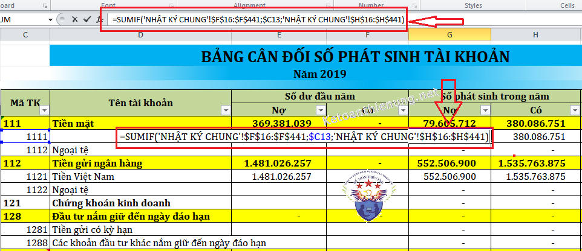
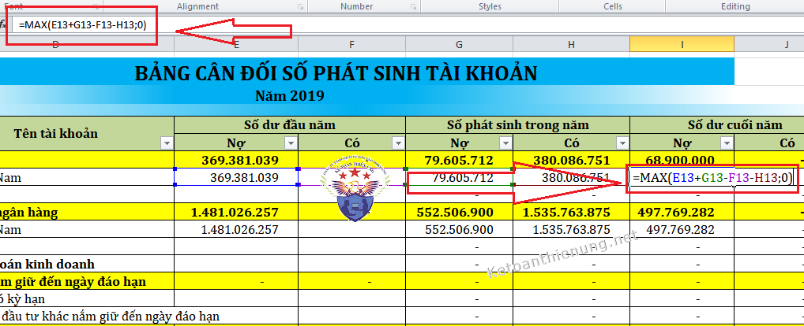
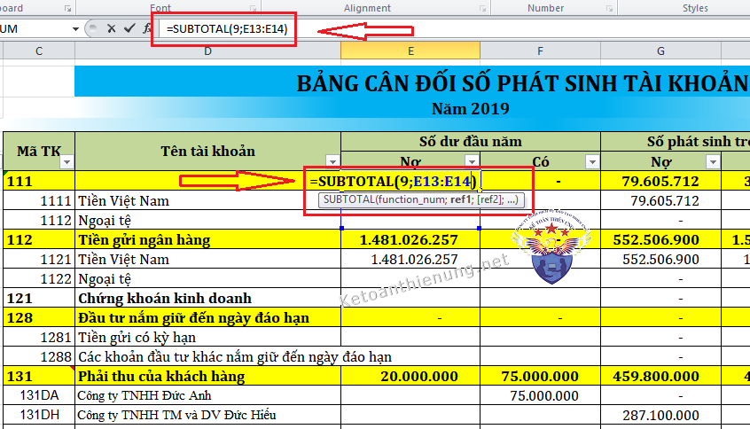

Phần trước các bạn đã được hướng dẫn cách làm sổ sách kế toán trên Excel theo mẫu Công ty kế toán Diệu Tâm thiết kế. Bài viết này các bạn sẽ được hướng dẫn cách lập các bảng biểu cuối tháng trên Excel như:
1. Hướng dẫn cách lập bảng tổng hợp Nhập – Xuất – Tồn kho trên Excel:
Cột Số lượng và Thành tiền nhập trong kỳ: Dùng hàm SUMIF tập hợp từ Phiếu nhập kho về
Cột Số lượng Xuất trong kỳ: Dùng hàm SUMIF tập hợp từ Phiếu xuất kho về
Cột Đơn giá xuất kho: Tính theo công thức tính đơn giá bình quân cuối ký
- Để có được bảng NXT của cá tháng sau, bạn Coppy bảng NXT của tháng trước và dán (Paste) xuống phía dưới, xoá trắng toàn bộ số liệu, đặt lại công thức cho các cột tương ứng.
Cột Mã hàng hoá, Tên hàng hoá, Đơn vị tính: Dùng hàm VLOOKUP tìm từ số dư cuối tháng trước xuống.
Các cột khác tính như hướng dẫn ở phần trên.
-> Cách sử sụng hàm Sumif và Vlookup các bạn xem phần 3 bên dưới nhé.
--------------------------------------------------------------------------------------
2. Hướng dẫn cách lập bảng phân bổ chi phí trả trước ngắn hạn, dài hạn và khấu hao TSCĐ:
- Để có được các bảng trên của các tháng sau, ta Coppy các bảng đó của tháng trước và dán (Paste) xuống phía dưới, xoá số liệu ở cột "Số khấu hao (phân bổ) lũy kế kỳ trước" và đặt hàm VLOOKUP cho cột này để tìm về giá trị tương ứng từ tháng trước.
- Hoặc căn cứ vào Số tháng đã phân bổ và mức phân bổ 1 tháng để tính.
- Khi phát sinh TSCĐ mới hoặc CCDC mới ta phải khai báo thêm TSCĐ hoặc CCDC đó tại các bảng tương ứng.
-> Cách sử sụng hàm Vlookup các bạn xem phần 3 bên dưới nhé.
-------------------------------------------------------------------------
3. Hướng dẫn cách lập bảng cân đối phát sinh Tài khoản trên Excel:
Cột Mã TK, tên TK: Dùng hàm VLOOKUP hoặc Coppy từ DM tài khoản về (luôn đảm bảo rằng DMTK luôn được cập nhật thường xuyên các TK về Khách hàng và phải đầy đủ nhất)
Cột Số dư đầu kỳ: Dùng hàm VLOOKUP tìm từ số dư cuối tháng trước về.
Xem thêm: Cách sử dụng hàm Vlookup trong Excel
Cột Số phát sinh Nợ và phát sinh Có trong kỳ: Sử dụng hàm SUMIF tổng hợp số liệu từ bảng Nhật ký chung của từng tháng sang.-> Chi tiết các bạn có thể xem hình dưới:

Số dư cuối kỳ:Cột Nợ = Max( Số dư Nợ đầu kỳ + Số PS Nợ trong kỳ- Số dư Có đầu kỳ - Số PS Có trong kỳ,0)
Cột Có = Max ( Số dư Có đầu kỳ+ Số PS Có trong kỳ - Số Dư Nợ đầu kỳ - Số PS Nợ tron kỳ,0)
-> Chi tiết các bạn có thể xem hình dưới:

Tính Tổng cho các Tài khoản:
- Dùng hàm SUBTOTAL tính tổng cho từng TK cấp 1 (chỉ cần tính cho những tài khoản có chi tiết phát sinh).
Cú pháp = SUBTOTAL(9,dãy ô cần tính tổng)
-> Chi tiết như hình dưới:

Cuối cùng:
- Sau đó tính lại dòng Tổng cộng trên CĐPS Tài khoản bằng hàm SUBTOTAL.
------------------------------------------------------------------------
Các bạn muốn học thực hành lên sổ sách, lập báo cáo tài chính trên Excel bằng hóa đơn chứng từ thực tế có thể tham gia: Khóa học kế toán trên Excel
Chúc các bạn làm tốt công việc kế toán!
Chúc các bạn làm tốt công việc kế toán!
__________________________________________________